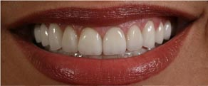

Beautiful Teeth Now provides aesthetic dental implants for the area concerned with long-lasting natural look. The total solution include implants ,crowns and bridges, to name a few.
The constraints of dental implants are-
1. Easy Esthetic
- Easy procedures
- Beautiful and long-lasting results
2. Soft Tissue Integration
- Maintaining, regaining gingival contours
- Long-lasting soft tissue esthetic
3. Immediate Function
- No healing time required
- Greater patient comfort, shorter treatment time
A patient with root fracture on upper right lateral incisal tooth was advised tooth extraction, immediate Nobel active implant placement and temporary crown application. His adjacent teeth had faulty composite facing which required replacement by crowns and veneer. The patient received immediate aesthetic implants and functions in one visit.
It is the art and science of treatment in managing with solf tissue (gum) around the implant area.
Crown implant can actually be done in a very short time with less number of treatment appointments, abut aesthetic implant treatments require more detail.
Temporary crown application on implant is a key to achieve desirable solf tissue (gum) condition.
The patient may need 3-4 sittings to adjust the temporary crown until the gum condition is pleasant.
Procera zirconia abutment is a tool to remove dark gingival margin line.
Procera all ceramic zirconia crown is the final step.
The procera crown and procera zirconia abutment are Nobel Biocare 's unique technology offers for dental restoration for all indications based on latest procera scanning, CAD/CAM and manufacturing technology. Beyond the ordinary implant treatment , aesthetic implant treatment is a trend for those crazed about flawless beautiful teeth.